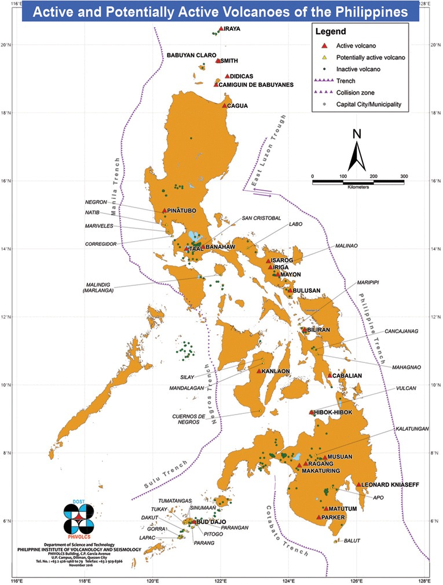

The Philippines is an archipelago situated in Southeast Asia, composed of over 7,000 islands. It is bounded by the Philippine Sea to the east, the South China Sea to the west, and the Celebes Sea to the south. This location on the Pacific Ring of Fire and close to the equator subjects the Philippines to diverse and challenging weather conditions, including frequent typhoons, earthquakes, and volcanic activity. The archipelago's landscape is predominantly mountainous with extensive coastal lowlands, which contribute to its rich biodiversity. The varying elevations and the tropical climate support a wide range of ecosystems, from lush rainforests to mangrove swamps, making it one of the most biodiverse areas on the planet. While these natural elements offer considerable ecological and agricultural resources, they also present significant natural hazards that the country has to manage, often requiring resilient infrastructure and robust disaster preparedness systems to mitigate their impacts.
At least one person was killed and 43 injured when the earthquake shook the central Philippines on August 18, sending residents fleeing their homes and damaging buildings and roads (Javee Vallecer/AFP, 2020).
The Philippines are located on top of the Pacific Ring of Fire, which is 40,000 km long and traces boundaries between several tectonic plates. There are two main types of tectonic plate boundaries along the Ring of Fire - convergent boundaries, specifically subduction zones and transform boundaries (Brown, 2023). The main transform boundary is the border between the Pacific and North American Plates, which generates a lot of tension - thus making the islands very prone to earthquakes. Some earthquake-related statistics for the Philippines are that in the last ten years, 7,882 earthquakes with at least a magnitude of 4 have occurred within 300 km of islands as of April 21 at 5:14 pm (Tijs, 2024). Additionally, approximately every 11 hours, an earthquake occurs, and there is a daily average of 20 earthquakes. Many of these earthquakes have magnitudes of 4.5 or less and do not cause infrastructure damage or loss of life. However, there is a significant risk for stronger earthquakes, and between 1968 and 2017 there have been 12 recorded destructive earthquakes.
One of the main reasons that some earthquakes are very destructive is that the Philippines is located off the coast of Asia in the Pacific Ocean, and most of its residents live on the coast. Therefore, they are very prone to liquefaction, which causes the ground to lose cohesion and increases the chances of buildings falling down. Additionally, because the country isn’t fully developed, many poor people settle along the coast, and the evacuation plans aren’t adequate (Henning, 2022). The country does have mitigation measures in place to combat its unfortunate location. For one, building codes and standards have been established to build infrastructure to resist seismic loading and reduce the damage when earthquakes inevitably occur. As mentioned earlier, the coastal areas are prone to liquefaction and landslides, but landscape is not the only factor to consider. Building material is also important; most earthquake-resistant structures are built with reinforced concrete and structural steel because of their strength and ductility (Cabarle, 2023).
The Philippines also has a National Disaster Risk Reduction and Management Council (NDRRMC), responsible for coordinating preparedness, response, prevention and mitigation, and rehabilitation and recovery. They have a national disaster response plan with three stages (Henning, 2022). First, they assess the risk, and then the second stage involves Response Cluster and Incident Management Teams (IMT) who are responsible for relief and response after the disaster hits. Lastly, the third stage involves “response clusters” to aid in the transition to recovery and rehabilitation (Henning, 2022) They also have agencies responsible for early warnings, such as The Philippine Institute of Volcanology and Seismology (PHIVOLCS). This department mainly provides information on volcano, earthquake, and tsunami activity and forecasts volcanic eruptions and earthquakes to determine how and where they are likely to occur. On their website, they have many infographics on earthquake preparedness, including “How Safe is Your House,” “Earthquake Safety in School,” and “Earthquake - Are you Prepared?” (Staff, 2024). Overall, the Philippines has a very structured system in place and is doing its best to mitigate its frequent run in with earthquakes.
Above is a depiction of the Pacific Ring of Fire as well as the many tectonic plates that it lies on (BBC, 2009)
The Philippines has over 300 volcanoes in which 24 are active volcanoes which threaten millions of people (PHIVOLCS). The most highly active are Taal, Mayon, Bulusan, Kanlaon and Hibok-Hibok (PHIVOLCS) . The northernmost island of Luzon contains the majority of the volcanoes in the Philippines while the rest are scattered throughout the south with a good amount of volcanoes also being present in the southernmost island of Mindanao. The Philippines location on the Pacific Ring of Fire makes it predisposed to having these volcanoes as well as frequent earthquakes. The majority of these volcanoes are stratovolcanoes and this is due to the Philippines being surrounded by subduction zones. The Philippines location makes it an unfortunate location open to a large amount of natural hazards, additionally the Philippines sits at the intersection between the Pacific and Eurasian plates (CFE-DM, 2018). Along most of the Ring of Fire, the tectonic plates overlap, forming subduction zones, which create the perfect conditions for volcanic activity. The Philippines also is a very dense place to live, the Philippines is the 13th most populated country in the world with the most densely populated capital city in the world, Manila . Most of the islands are small and do not support a large population forcing those that are less fortunate to home next to some of these stratovolcanoes (Henning, 2022). All of these factors considered the dispersion of stratovolcanoes across the Philippines makes the country’s population prone to diasterous consequences from volcanic eruptions.
Map of the Philippines showing the multiple different locations of Volcanoes (PHIVOLCS).
Mount Mayon is a stratovolcano located on the island of Luzon. Surrounding it are multiple municipalities including Polangui, Ligao, Guinobaton, Camalig, Daraga, and Legazpi City (Venzke, E., & Crafford 2018). Mount Mayon also had names given to the surrounding gullies of the volcano. Mount Mayon erupted on January 13 2018, 10 meters of lava and volcanic ash were spewed 32 feet into the air (CFE-DM 2018). The municipalities of Guniobaton and Camalig, to the southwest, were already reporting portions of ash in their territory. Around 20,000 local residents were forced to evacuate the area due to the hazardous material that was spewed. The explosions caused by the eruption also caused 158 rockfall events around the area (Venzke, E., & Crafford 2018). As time went on the eruption grew more intense and created a larger ash plume 2.5-3 km above the summit of Mount Mayon, and pyroclastic flows seeped down the Mi-isi gully towards Legazpi City. The ash plume covered sections of Polangui and Liago to the west of the volcano and Guniobaton and Camalig to the south. By January 22 2018, over 50,000 people in the surrounding area had evacuated to shelters and airports were closed temporarily in Legazpi City (Venzke, E., & Crafford 2018). Alert levels were elevated until late March, and over 90,000 people were stuck in shelters away from their homes until April 2018 (UN-OCHA, 2018). Some of the biggest challenges were faced here by the Philippines populace. Specifically the farmers and the impoverished. Villages have been around volcanoes for generations for the pros of volcanic soil for agriculture, however it is also because of the poverty affecting the Philippines. The economic inequality of the country ,the poor living conditions and the overcrowding of Manila forces rural farmers who lived around Mayon to stay where they are (Kitchen 2023). Over 10,500 farmers were affected, and were provided farm materials and supplies from the government and global aid due to damage from the eruption (UN-OCHA, 2018). The farmers were the most affected by the ash from the volcano. Volcanic ash can kill vegetation immediately after an eruption, additionally heavy rainfall mixing with ash and rock creating deadly mudflows could cause entire farming settlements to be washed away, killing livestock and destroying homes (Macaraig, 2018). However, not all of the farmers see volcanic ash a bad thing, in fact some actually choose to stay during volcanic activity despite warnings from the government. A thin layer of ash can actually provide an extremely good fertilizer for crops and some farmers take advantage of this. Head of the Philippine Institute of Volcanology and Seismology Renato Solidum told media outlets “If the ash is thin, it would become a fertilizer but if the ash is thick it would mean farmers who had spent money a lot of money to plant the vegetables lose everything,” (Macaraig, 2018). Many farmers would also stay because they didn’t have a choice to leave their farms, some would make dashes from evacuation zones to check on their livestock or crops. This is extremely dangerous, the local government would mitigate this by creating communal areas of ash-free grazing grass for livestock and crop growing, however some farmers were stubborn and would still take the dash toward their lands and livelihoods (Macarig, 2018).
Filipino farmer Jay Balindang leading his livestock through a no-go zone (Macaraig, 2018)
The main method of mitigation in the Philippines for volcanoes is evacuation and alert leveling system to notify populations prior to or during a volcanic eruption. The Philippines institute of Volcanology and Seismology operates on a large volcano monitoring system that can warn populations immediately at the rising of alert levels of a volcano eruption. The alert level system operates on 5 levels, raising in severity from 1 to 5. In the Philippines, evacuation of personnel around the danger zone of the volcano is compulsory at alert level 3. The institute also provides instructions on what to do in case of heavy ash fall on their website, they recommend a volcanic preparedness kit that includes a gas mask, radio, a handheld lightsource, water, and a face cloth (PHIVOLCS). Mitigation isn’t perfect however, it was also noted that during the evacuations of the eruption of Mount Mayon in 2018 some evacuation centers were underprepared for the amount of evacuees that were housed within evacuation centers (UN-OCHA, 2018). The Philippines institute of Volcanology and Seismology remains the key monitor for volcanoes in the Philippines and constantly monitors volcano through volcano observatories.
With the Philippines being extremely prone to earthquakes due to its location on the Ring of Fire and position with the Pacific, Sunda, Eurasia, and Philippine Plates, it is also susceptible to tsunamis. Tsunamis are mostly caused by a disturbance on the seafloor, which causes a mass movement of water, which generates giant waves that can cause catastrophic damage (National Geographic, n.d.). As stated earlier, the Philippines is surrounded by multiple plate boundaries, which are transform and convergent, so there are a lot of earthquakes generated by these movements, which generate tsunamis. The Philippines also has many volcanoes being on the Ring of Fire, so these eruptions can also generate tsunamis. The country is also an island, so a tsunami can hit the island from all directions, as seen in Figure 1.
The Philippines have had 21 tsunamis since 1749 (World Data, n.d.). The most devastating tsunami happened in the Moro Gulf in 1976. An offshore earthquake of magnitude 8.0 was responsible for generating a tsunami that killed an estimated 5,000 to 8,000 people and reached a maximum height of 30 feet. It destroyed many coastal villages and left more than 90,000 people homeless. The most recent tsunami to hit the Philippines was August 2012 (U.S. Tsunami Warning Centers, n.d.). This tsunami was generated by a 7.6 magnitude earthquake that affected the cities Manila and Shunlagan that killed one person.
The Philippines has put into place many warning systems to help people take precautions and have time to evacuate and prepare. The government has a monitoring system that spans the country, with 32 detection stations (as seen in Figure 3) that detect seismic activity and changes in the sea level, which then help make a decision to sound the alarm and alert citizens (PHIVOLCS, n.d.). The Philippines, with help from the United Nations, has implemented education programs in the schools to educate students on how to act in the event of a tsunami (UNDP, November 2018). Schools have started doing tsunami drills and meetings with parents and guardians to educate them as well on what to do.
Figure 1 - Map of the Philippines and Tsunami Prone Areas (PHIVOLCS).
Figure 2 - A map showing all of the monitoring and detection stations in the Philippines (PHIVOLCS, n.d.).
Figure 3 - Destruction caused by the Moro Gulf tsunami in 1976 (Serafica, October 2018).
Climate change poses many threats to the Philippines as natural disasters are increasing in both severity and frequency. Due to the country’s coastal nature, the Philippines is extremely vulnerable, with more than 7,100 islands and an almost 40km coastline. There is projected sea level rise and elevated storm surges. Additionally, agricultural practices are predicted to be affected. Ocean acidification threatens fishermen because, without coral reefs - which serve as feeding and reproduction grounds for fish, the potential catch capacity is reduced by almost 50 percent (CFE-DM, 2018). Weather extremes are directly related to climate change, and in the Philippines, heat extremes in the country significantly increase the potential for heat-related deaths and droughts.
However, the Philippines is number 3 in countries leading the way on climate change, with an overall score of 70.7 on the 2024 Climate Change Performance Index- performing the best in emissions and energy use (Navarre, 2024). The country is doing exceedingly well in switching to renewable energy and must now prioritize improving its infrastructure, including roads, railways, waterways, communications, and utilities (CRP, 2016) The country has passed several acts and policies, including the National Climate Change Action Plan (NCCAP), to prioritize food security, water sufficiency, ecosystem and environmental stability, human security, and sustainable energy (CFE-DM, 2018).
Since 1990, the Philippines has seen 565 disasters, resulting in $23 Billion in damages (International Monetary Fund, December 2023). As the climate warms and more typhoons hit the Philippines, the expected cost to rebuild is going to increase. Because many of these disasters cannot be prevented, the World Bank has established a partnership with the Philippines to “develop the first catastrophe risk model for the country, a disaster risk finance strategy, arrange contingent financing, provide technical assistance, and intermediated market-based transactions—all components of broader disaster risk dialogue" (World Bank Group, July 2020). Because of its geographic location and the forecast of future natural disasters, the World Bank will continue to fund and send aid to the Philippines, and assist in creating plans for the Philippines to budget for these future catastrophes.
As natural disasters become the “new normal” for the Philippines due to climate change, the government is constantly faced with new challenges as to how to mitigate damage, combat the costs of destruction, and lead the country through these events. The Department of Public Works in the Philippines is composed of many government officials that are committed to improving infrastructure to specifically sustain earthquakes (World Bank Group, July 2020). This has inspired many other departments in the government to create groups to accommodate for the improvements that can be made to better prepare and sustain these constant disasters. The government has also started to update codes modeled after Japan to better sustain earthquakes.